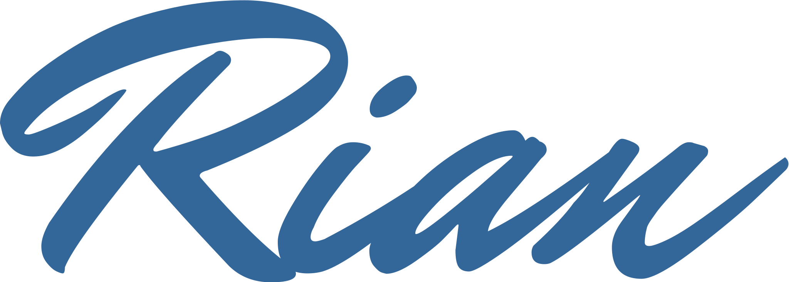

Intro
Hello! Thanks for visiting my personal website.
I'm Rian Mubarok, a passionate informatics engineering student driven by a love for technology and innovation. While I’m still in the early stages of my career, I’m committed to exploring every aspect of tech, from front-end development—the part users interact with—to the intricate backend systems that keep things running smoothly.
I'm fascinated by programming languages like JavaScript and Python, which form the backbone of web and software development. I’m also diving deep into frameworks like React, Node.js, and Django, which make building dynamic and user-friendly applications much more efficient. My goal is to master both sides of development—creating functional systems that are intuitive and visually appealing.
Although I’m still gathering experience, I’m keen to learn project management methodologies like Agile and Scrum to effectively collaborate on complex projects. I'm especially interested in creating technology that solves real-world problems and improves everyday life.
I enjoy working on projects that challenge me to grow and expand my skillset. Whether it’s collaborating with others or diving into solo work, I’m always up for the challenge. My curiosity and dedication push me to keep learning and adapting in this ever-evolving field of technology.
I’m excited about the journey ahead and the potential to contribute to exciting projects with like-minded individuals. Let’s create something amazing together!
Best Regards,

Resume
| Full Name | : Muhammad Fitrian Mubarok |
| : moebarok88@gmail.com | |
| Address | : Jepara, Indonesia |
| Phone | : +6289670401161 |
Education
Informatics Engineering in UNISNU Jepara
2023 - now